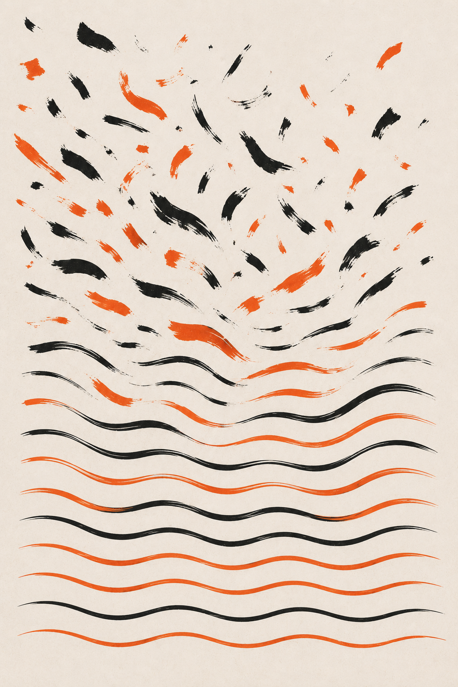

Flovah NoteJun.2026
브랜드에 톤이 없으면,
매번 처음부터
시작합니다
매번 처음부터
시작합니다
톤앤매너는 취향이 아니라
효율의 문제입니다.
효율의 문제입니다.
Flovah NoteJun.2026
01 · 정의
같은 브랜드인데
콘텐츠마다 다릅니다
콘텐츠마다 다릅니다
담당자가 바뀌면 톤이 바뀝니다.
제작사가 바뀌면 느낌이 바뀝니다.
톤앤매너가 정의되어 있지 않으면
일관성을 우연에 맡기는 것입니다.
제작사가 바뀌면 느낌이 바뀝니다.
톤앤매너가 정의되어 있지 않으면
일관성을 우연에 맡기는 것입니다.
Flovah NoteJun.2026
02 · 문제
톤이 없으면
생기는 일
생기는 일
게시물 하나를 만들 때마다
색, 폰트, 말투를 처음부터 고민합니다
색, 폰트, 말투를 처음부터 고민합니다
기준이 없으니
피드백이 "느낌상"으로 옵니다
피드백이 "느낌상"으로 옵니다
콘텐츠가 쌓여도
브랜드가 되지 않습니다
브랜드가 되지 않습니다
Flovah NoteJun.2026
03 · 관점
톤은 느낌이 아니라
기준입니다
기준입니다
좋은 톤앤매너는 문서화되어 있습니다.
누가 봐도 같은 방향을 잡을 수 있도록
구체적인 기준이 필요합니다.
공유할 수 없는 톤은
아직 톤이 아닙니다.
누가 봐도 같은 방향을 잡을 수 있도록
구체적인 기준이 필요합니다.
공유할 수 없는 톤은
아직 톤이 아닙니다.
Flovah NoteJun.2026
04 · 차이
톤 가이드가 있을 때
달라지는 것
달라지는 것
BEFORE매번 "이런 느낌으로"라고 설명
NOW톤 가이드 한 장으로 방향 공유
BEFORE담당자마다 다른 결과물
NOW누가 작업해도 일관된 톤
BEFORE수정 방향 합의에 시간 소요
NOW가이드 기준으로 빠른 피드백
Flovah NoteJun.2026
05 · 구조
가이드에 들어가야 할
네 가지
네 가지
Voice
브랜드 말투
격식체와 비격식체,
문장 길이, 호칭 기준
문장 길이, 호칭 기준
Mood
시각적 분위기
컬러 톤, 이미지 스타일,
여백과 밀도의 방향
여백과 밀도의 방향
Sample
Good / Bad 예시
이런 표현은 OK,
이런 표현은 NOT처럼 구체적으로
이런 표현은 NOT처럼 구체적으로
Apply
채널별 적용
인스타, 유튜브, 웹.
채널마다 적용 방식 명시
채널마다 적용 방식 명시
Flovah NoteJun.2026
06 · 솔직히
"우리는 아직
이른 것 같은데요"
이른 것 같은데요"
브랜드가 작을수록
오히려 일찍 정하는 게 유리합니다.
콘텐츠가 쌓이고 나면
톤을 바꾸는 비용이 커집니다.
톤앤매너는 큰 브랜드의 전유물이 아니라
콘텐츠를 만드는 모든 브랜드의 기준입니다.
오히려 일찍 정하는 게 유리합니다.
콘텐츠가 쌓이고 나면
톤을 바꾸는 비용이 커집니다.
톤앤매너는 큰 브랜드의 전유물이 아니라
콘텐츠를 만드는 모든 브랜드의 기준입니다.
Flovah NoteJun.2026
07 · 원칙
정하는 것보다
지키는 게 어렵습니다
지키는 게 어렵습니다
머릿속에만 있는 톤은 톤이 아닙니다
문서로 정리할 것
문서로 정리할 것
추상적인 설명보다 효과적인 건
Good / Bad 예시를 넣을 것
Good / Bad 예시를 넣을 것
브랜드는 성장합니다
정기적으로 업데이트할 것
정기적으로 업데이트할 것
Flovah NoteJun.2026
08 · 제안
다음 프로젝트 전에
하나만 확인해보세요
하나만 확인해보세요
"우리 브랜드의 톤을
문서로 설명할 수 있는가?"
대답이 막힌다면,
지금이 톤을 정할 가장 빠른 때입니다.
Flovah NoteJun.2026
복잡한 이야기를
명료하게, 완벽하게.
명료하게, 완벽하게.
www.flovah.com